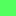
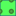

<!doctype html>
<html lang="en">
    <head>
        <meta charset="utf-8">
        <meta http-equiv="X-UA-Compatible" content="IE=edge">
        <meta name="viewport" content="initial-scale=1,user-scalable=no,maximum-scale=1,width=device-width">
        <meta name="mobile-web-app-capable" content="yes">
        <meta name="apple-mobile-web-app-capable" content="yes">
        <link rel="stylesheet" href="css/leaflet.css"><link rel="stylesheet" href="css/L.Control.Locate.min.css">
        <link rel="stylesheet" href="css/qgis2web.css"><link rel="stylesheet" href="css/fontawesome-all.min.css">
        <link rel="stylesheet" href="css/leaflet-search.css">
        <link rel="stylesheet" href="css/leaflet-control-geocoder.Geocoder.css">
        <link rel="stylesheet" href="css/leaflet-measure.css">
        <style>
        html, body, #map {
            width: 100%;
            height: 100%;
            padding: 0;
            margin: 0;
        }
        </style>
        <title></title>
    </head>
    <body>
        <div id="map">
        </div>
        <script src="js/qgis2web_expressions.js"></script>
        <script src="js/leaflet.js"></script><script src="js/L.Control.Locate.min.js"></script>
        <script src="js/leaflet.rotatedMarker.js"></script>
        <script src="js/leaflet.pattern.js"></script>
        <script src="js/leaflet-hash.js"></script>
        <script src="js/Autolinker.min.js"></script>
        <script src="js/rbush.min.js"></script>
        <script src="js/labelgun.min.js"></script>
        <script src="js/labels.js"></script>
        <script src="js/leaflet-control-geocoder.Geocoder.js"></script>
        <script src="js/leaflet-measure.js"></script>
        <script src="js/proj4.js"></script>
        <script src="js/proj4leaflet.js"></script>
        <script src="js/leaflet-search.js"></script>
        <script src="data/lu_demoattribute_0.js"></script>
        <script>
        var highlightLayer;
        function highlightFeature(e) {
            highlightLayer = e.target;

            if (e.target.feature.geometry.type === 'LineString') {
              highlightLayer.setStyle({
                color: '#ffff00',
              });
            } else {
              highlightLayer.setStyle({
                fillColor: '#ffff00',
                fillOpacity: 1
              });
            }
        }
        var crs = new L.Proj.CRS('EPSG:3857', '+proj=merc +a=6378137 +b=6378137 +lat_ts=0 +lon_0=0 +x_0=0 +y_0=0 +k=1 +units=m +nadgrids=@null +wktext +no_defs', {
            resolutions: [2800, 1400, 700, 350, 175, 84, 42, 21, 11.2, 5.6, 2.8, 1.4, 0.7, 0.35, 0.14, 0.07],
        });
        var map = L.map('map', {
            crs: crs,
            continuousWorld: false,
            worldCopyJump: false, 
            zoomControl:true, maxZoom:28, minZoom:1
        }).fitBounds([[25.06077442851659,96.0776471238782],[25.147361192028065,96.2038029999119]]);
        var hash = new L.Hash(map);
        map.attributionControl.setPrefix('<a href="https://github.com/tomchadwin/qgis2web" target="_blank">qgis2web</a> &middot; <a href="https://leafletjs.com" title="A JS library for interactive maps">Leaflet</a> &middot; <a href="https://qgis.org">QGIS</a>');
        var autolinker = new Autolinker({truncate: {length: 30, location: 'smart'}});
        L.control.locate({locateOptions: {maxZoom: 19}}).addTo(map);
        var measureControl = new L.Control.Measure({
            position: 'topleft',
            primaryLengthUnit: 'meters',
            secondaryLengthUnit: 'kilometers',
            primaryAreaUnit: 'sqmeters',
            secondaryAreaUnit: 'hectares'
        });
        measureControl.addTo(map);
        document.getElementsByClassName('leaflet-control-measure-toggle')[0]
        .innerHTML = '';
        document.getElementsByClassName('leaflet-control-measure-toggle')[0]
        .className += ' fas fa-ruler';
        var bounds_group = new L.featureGroup([]);
        function setBounds() {
            map.setMaxBounds(map.getBounds());
        }
        function pop_lu_demoattribute_0(feature, layer) {
            layer.on({
                mouseout: function(e) {
                    for (i in e.target._eventParents) {
                        e.target._eventParents[i].resetStyle(e.target);
                    }
                },
                mouseover: highlightFeature,
            });
            var popupContent = '<table>\
                    <tr>\
                        <th scope="row">qc_id</th>\
                        <td>' + (feature.properties['qc_id'] !== null ? autolinker.link(feature.properties['qc_id'].toLocaleString()) : '') + '</td>\
                    </tr>\
                    <tr>\
                        <th scope="row">vname_en</th>\
                        <td>' + (feature.properties['vname_en'] !== null ? autolinker.link(feature.properties['vname_en'].toLocaleString()) : '') + '</td>\
                    </tr>\
                    <tr>\
                        <th scope="row">lu_en</th>\
                        <td>' + (feature.properties['lu_en'] !== null ? autolinker.link(feature.properties['lu_en'].toLocaleString()) : '') + '</td>\
                    </tr>\
                    <tr>\
                        <th scope="row">lu_id</th>\
                        <td>' + (feature.properties['lu_id'] !== null ? autolinker.link(feature.properties['lu_id'].toLocaleString()) : '') + '</td>\
                    </tr>\
                    <tr>\
                        <th scope="row">cmt</th>\
                        <td>' + (feature.properties['cmt'] !== null ? autolinker.link(feature.properties['cmt'].toLocaleString()) : '') + '</td>\
                    </tr>\
                    <tr>\
                        <th scope="row">fid</th>\
                        <td>' + (feature.properties['fid'] !== null ? autolinker.link(feature.properties['fid'].toLocaleString()) : '') + '</td>\
                    </tr>\
                    <tr>\
                        <th scope="row">lu_abbrev</th>\
                        <td>' + (feature.properties['lu_abbrev'] !== null ? autolinker.link(feature.properties['lu_abbrev'].toLocaleString()) : '') + '</td>\
                    </tr>\
                    <tr>\
                        <th scope="row">unique_id</th>\
                        <td>' + (feature.properties['unique_id'] !== null ? autolinker.link(feature.properties['unique_id'].toLocaleString()) : '') + '</td>\
                    </tr>\
                    <tr>\
                        <th scope="row">qgis_ver</th>\
                        <td>' + (feature.properties['qgis_ver'] !== null ? autolinker.link(feature.properties['qgis_ver'].toLocaleString()) : '') + '</td>\
                    </tr>\
                    <tr>\
                        <th scope="row">date</th>\
                        <td>' + (feature.properties['date'] !== null ? autolinker.link(feature.properties['date'].toLocaleString()) : '') + '</td>\
                    </tr>\
                    <tr>\
                        <th scope="row">area_unit</th>\
                        <td>' + (feature.properties['area_unit'] !== null ? autolinker.link(feature.properties['area_unit'].toLocaleString()) : '') + '</td>\
                    </tr>\
                </table>';
            layer.bindPopup(popupContent, {maxHeight: 400});
        }

        function style_lu_demoattribute_0_0(feature) {
            switch(String(feature.properties['lu_en'])) {
                case 'CONSERVED FOREST':
                    return {
                pane: 'pane_lu_demoattribute_0',
                opacity: 1,
                color: 'rgba(35,35,35,0.0)',
                dashArray: '',
                lineCap: 'butt',
                lineJoin: 'miter',
                weight: 1.0, 
                fill: true,
                fillOpacity: 1,
                fillColor: 'rgba(11,135,63,1.0)',
                interactive: true,
            }
                    break;
                case 'ORCHARD':
                    return {
                pane: 'pane_lu_demoattribute_0',
                opacity: 1,
                color: 'rgba(35,35,35,0.0)',
                dashArray: '',
                lineCap: 'butt',
                lineJoin: 'miter',
                weight: 1.0, 
                fill: true,
                fillOpacity: 1,
                fillColor: 'rgba(83,255,94,1.0)',
                interactive: true,
            }
                    break;
                case 'PINE FOREST':
                    return {
                pane: 'pane_lu_demoattribute_0',
                opacity: 1,
                color: 'rgba(35,35,35,0.0)',
                dashArray: '',
                lineCap: 'butt',
                lineJoin: 'miter',
                weight: 1.0, 
                fill: true,
                fillOpacity: 1,
                fillColor: 'rgba(255,209,183,1.0)',
                interactive: true,
            }
                    break;
                case 'SETTLEMENT':
                    return {
                pane: 'pane_lu_demoattribute_0',
                opacity: 1,
                color: 'rgba(35,35,35,0.0)',
                dashArray: '',
                lineCap: 'butt',
                lineJoin: 'miter',
                weight: 1.0, 
                fill: true,
                fillOpacity: 1,
                fillColor: 'rgba(0,0,0,1.0)',
                interactive: true,
            }
                    break;
                case 'TERRACE':
                    return {
                pane: 'pane_lu_demoattribute_0',
                opacity: 1,
                color: 'rgba(38,89,128,1.0)',
                dashArray: '',
                lineCap: 'butt',
                lineJoin: 'miter',
                weight: 1.0, 
                fill: true,
                fillOpacity: 1,
                fillColor: 'rgba(85,255,93,1.0)',
                interactive: true,
            }
                    break;
            }
        }
        map.createPane('pane_lu_demoattribute_0');
        map.getPane('pane_lu_demoattribute_0').style.zIndex = 400;
        map.getPane('pane_lu_demoattribute_0').style['mix-blend-mode'] = 'normal';
        var layer_lu_demoattribute_0 = new L.geoJson(json_lu_demoattribute_0, {
            attribution: '',
            interactive: true,
            dataVar: 'json_lu_demoattribute_0',
            layerName: 'layer_lu_demoattribute_0',
            pane: 'pane_lu_demoattribute_0',
            onEachFeature: pop_lu_demoattribute_0,
            style: style_lu_demoattribute_0_0,
        });
        bounds_group.addLayer(layer_lu_demoattribute_0);
        map.addLayer(layer_lu_demoattribute_0);
        var osmGeocoder = new L.Control.Geocoder({
            collapsed: true,
            position: 'topleft',
            text: 'Search',
            title: 'Testing'
        }).addTo(map);
        document.getElementsByClassName('leaflet-control-geocoder-icon')[0]
        .className += ' fa fa-search';
        document.getElementsByClassName('leaflet-control-geocoder-icon')[0]
        .title += 'Search for a place';
        var baseMaps = {};
        L.control.layers(baseMaps,{'lu_demoattribute<br /><table><tr><td style="text-align: center;"></td><td>CONSERVED FOREST</td></tr><tr><td style="text-align: center;"></td><td>ORCHARD</td></tr><tr><td style="text-align: center;"></td><td>PINE FOREST</td></tr><tr><td style="text-align: center;"></td><td>SETTLEMENT</td></tr><tr><td style="text-align: center;"></td><td>TERRACE</td></tr></table>': layer_lu_demoattribute_0,},{collapsed:false}).addTo(map);
        setBounds();
        map.addControl(new L.Control.Search({
            layer: layer_lu_demoattribute_0,
            initial: false,
            hideMarkerOnCollapse: true,
            propertyName: 'lu_en'}));
        document.getElementsByClassName('search-button')[0].className +=
         ' fa fa-binoculars';
        </script>
    </body>
</html>
